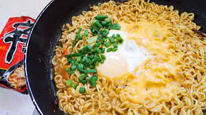

Kujirai Ramen
Description
Kujirai ramen is a diffrent way of making instant ramen. It comes from a japanese comic series. It has become viral on Korean Social Media website. It uses little water for the ramen as opposed to the original recipe for instant ramen which leads to it coming out dry instead of soup like the original.

Ingredients
- 1 package of Instant Ramen
- 1 Whole Egg
- 1 Slice American Cheese
- Chopped Green Onions
- 300ml of Water
Steps
- Bring 300ml of water to boil in a frying pan
- Add dried ramen noodles, dried veggies packet and 1/2 of seasoning packet
- After noodles loosen up, create a small circle in the middle of the pan
- Drop-in an egg and let it cook on low heat for 1 minute
- Add american cheese and garnish with chopped green onions